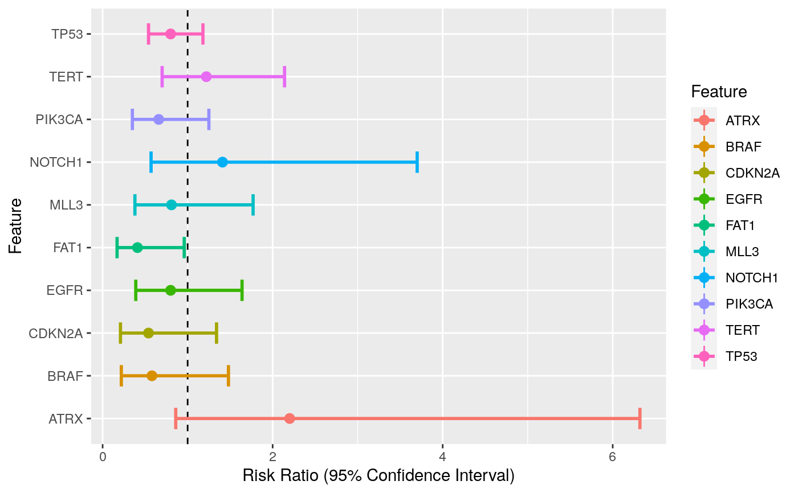

Creates a summary table of the distribution of the genetic features by a specific outcome/covariate of interest. The difference is tested using Fisher's exact test and further adjusted for multiple comparisons. Note that continuous genetic factors are dichotomized at their median.
gen.summary(gen.dat, outcome, filter = 0, paired = F, cont = F, rank = T)
| gen.dat | A matrix or dataframe, with patients as rows and features as columns. |
|---|---|
| outcome | A leveled vector of length equal to the number of rows in gen.dat. |
| filter | a numeric value between 0 and 1 (1 not included) that is the lower bound for the proportion of patients having a genetic event (only for binary features). All features with an event rate lower than that value will be removed. Default is 0 (all features included). |
| paired | Boolean if the data are paired. Default is FALSE. |
| cont | Should the outcome be treated as a continuous value. Default is FALSE treated as categorical. |
| rank | Should the table returned be ordered by Pvalue. Boolean, default is T |
fits : a table of odds ratio and pvalues.
forest.plot : A forest plot of the top 10 hits.
library(gnomeR) patients <- as.character(unique(mut$Tumor_Sample_Barcode)) ## binary outcome ## outcome <- as.character(clin.sample$Sample.Type[match(patients,clin.sample$Sample.Identifier)]) gen.dat <- binmat(patients = patients,maf = mut)#> Warning: To ensure gene with multiple names/aliases are correctly grouped together, the #> following genes in your maf dataframe have been recoded: #> AMER1 recoded to FAM123B #> To ensure gene with multiple names/aliases are correctly grouped together, the #> following genes in your maf dataframe have been recoded: #> TCEB1 recoded to ELOC#> Warning: Some genes in the final matrix were not part of the official IMPACT panel and thus couldn't be annotate #> for missing status. If you wish to have a complete list of genes in IMPACT please see 'impact_gene_info'. FIP1L1, INSRRgen.summary(gen.dat = gen.dat, outcome = outcome, filter = 0.05,paired = FALSE, cont = FALSE,rank = TRUE)#> Warning: geom_hline(): Ignoring `mapping` because `yintercept` was provided.#> $fits #> Feature Overall Metastasis(N=200) Primary(N=257) OddsRatio Pvalue #> FAT1 FAT1 6.13% 9% 3.89% 0.41 2.99e-02 #> ATRX ATRX 5.69% 3.5% 7.39% 2.2 1.02e-01 #> CDKN2A CDKN2A 5.25% 7% 3.89% 0.54 1.46e-01 #> PIK3CA PIK3CA 10.72% 13% 8.95% 0.66 1.73e-01 #> TP53 TP53 42.89% 46% 40.47% 0.8 2.54e-01 #> BRAF BRAF 5.03% 6.5% 3.89% 0.58 2.81e-01 #> TERT TERT 14.88% 13.5% 15.95% 1.22 5.09e-01 #> NOTCH1 NOTCH1 5.47% 4.5% 6.23% 1.41 5.35e-01 #> MLL3 MLL3 7.22% 8% 6.61% 0.81 5.89e-01 #> EGFR EGFR 8.53% 9.5% 7.78% 0.8 6.13e-01 #> KRAS KRAS 12.69% 13.5% 12.06% 0.88 6.73e-01 #> RB1 RB1 5.03% 4.5% 5.45% 1.22 6.74e-01 #> ARID1A ARID1A 7.88% 8.5% 7.39% 0.86 7.27e-01 #> ZFHX3 ZFHX3 3.06% 2.5% 3.5% 1.32 7.82e-01 #> ATM ATM 5.47% 5.5% 5.45% 0.99 1.00e+00 #> APC APC 7.88% 8% 7.78% 0.97 1.00e+00 #> FDR Lower Upper #> FAT1 4.78e-01 0.17 0.96 #> ATRX 6.92e-01 0.86 6.32 #> CDKN2A 6.92e-01 0.21 1.34 #> PIK3CA 6.92e-01 0.35 1.25 #> TP53 7.49e-01 0.54 1.18 #> BRAF 7.49e-01 0.22 1.48 #> TERT 8.94e-01 0.7 2.14 #> NOTCH1 8.94e-01 0.57 3.7 #> MLL3 8.94e-01 0.38 1.77 #> EGFR 8.94e-01 0.39 1.64 #> KRAS 8.94e-01 0.49 1.59 #> RB1 8.94e-01 0.48 3.27 #> ARID1A 8.94e-01 0.41 1.82 #> ZFHX3 8.94e-01 0.38 5.17 #> ATM 1.00e+00 0.41 2.47 #> APC 1.00e+00 0.46 2.06 #> #> $forest.plot#> #> $vPlot#> #> #>#> Warning: `arrange_()` is deprecated as of dplyr 0.7.0. #> Please use `arrange()` instead. #> See vignette('programming') for more help #> This warning is displayed once every 8 hours. #> Call `lifecycle::last_warnings()` to see where this warning was generated.#>## Continuous outcome ## <<<<<<< HEAD set.seed(1) outcome <- rnorm(n = nrow(gen.dat)) tab.out <- gen.summary(gen.dat = gen.dat, outcome = outcome, filter = 0.05,paired = FALSE, cont = TRUE,rank = TRUE) tab.out$fits#> Estimate SD Pvalue MutationFreq FDR #> 3 0.26 0.13 0.0463 0.15 6.69e-01 #> 12 0.29 0.21 0.1670 0.05 6.69e-01 #> 6 -0.20 0.15 0.1870 0.11 6.69e-01 #> 5 -0.27 0.21 0.2010 0.05 6.69e-01 #> 13 -0.24 0.20 0.2420 0.05 6.69e-01 #> 2 -0.13 0.14 0.3420 0.13 6.69e-01 #> 11 0.13 0.16 0.4280 0.09 6.69e-01 #> 9 0.13 0.18 0.4620 0.07 6.69e-01 #> 17 0.15 0.21 0.4670 0.05 6.69e-01 #> 4 -0.12 0.18 0.5030 0.07 6.69e-01 #> 15 -0.11 0.17 0.5140 0.08 6.69e-01 #> 1 -0.06 0.09 0.5260 0.43 6.69e-01 #> 16 -0.17 0.28 0.5410 0.06 6.69e-01 #> 10 -0.10 0.17 0.5510 0.08 6.69e-01 #> 14 -0.09 0.20 0.6370 0.06 7.22e-01 #> 7 0.06 0.19 0.7640 0.06 8.12e-01 #> 8 0.04 0.20 0.8590 0.05 8.59e-01tab.out$vPlot#> ======= set.seed(1) outcome <- rnorm(n = nrow(gen.dat)) tab.out <- gen.summary(gen.dat = gen.dat, outcome = outcome, filter = 0.05,paired = FALSE, cont = TRUE,rank = TRUE) tab.out$fits#> Estimate SD Pvalue MutationFreq FDR #> TERT 0.25771092 0.12896408 0.04627708 0.14879650 0.6777902 #> BRAF 0.29107349 0.21041434 0.16724057 0.05032823 0.6777902 #> PIK3CA -0.19670254 0.14870787 0.18658472 0.10722101 0.6777902 #> RB1 -0.26959944 0.21047721 0.20088266 0.05032823 0.6777902 #> ATM -0.23702856 0.20240914 0.24219687 0.05470460 0.6777902 #> KRAS -0.13150580 0.13834524 0.34233114 0.12691466 0.6777902 #> EGFR 0.13080516 0.16488262 0.42800322 0.08533917 0.6777902 #> CDKN2A 0.15020209 0.20653499 0.46744826 0.05251641 0.6777902 #> MLL3 -0.11928213 0.17800877 0.50313952 0.07221007 0.6777902 #> APC -0.11162773 0.17104091 0.51431953 0.07877462 0.6777902 #> TP53 -0.05910738 0.09310112 0.52583042 0.42888403 0.6777902 #> ZFHX3 -0.17243487 0.28163447 0.54096218 0.05982906 0.6777902 #> ARID1A -0.10214478 0.17105393 0.55070456 0.07877462 0.6777902 #> ATRX -0.09403244 0.19895900 0.63670938 0.05689278 0.7276679 #> FAT1 0.05765920 0.19219623 0.76431286 0.06126915 0.8152671 #> NOTCH1 0.03600625 0.20270690 0.85909483 0.05470460 0.8590948tab.out$vPlot#> >>>>>>> a875652248dbaae97b269cfe4efb962be077b5d8 #> #>#> Warning: `line.width` does not currently support multiple values.#> Warning: minimal value for n is 3, returning requested palette with 3 different levels#> Warning: minimal value for n is 3, returning requested palette with 3 different levels